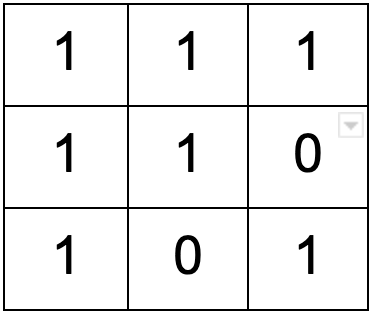
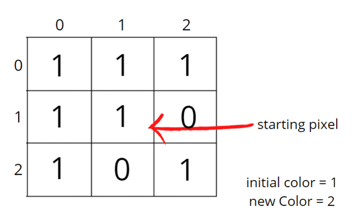
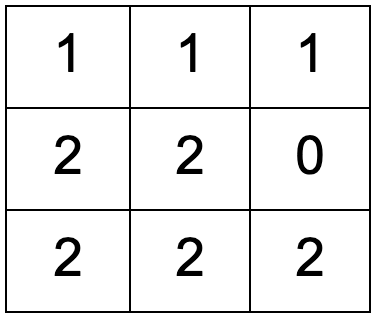
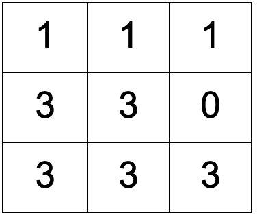
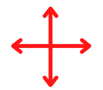
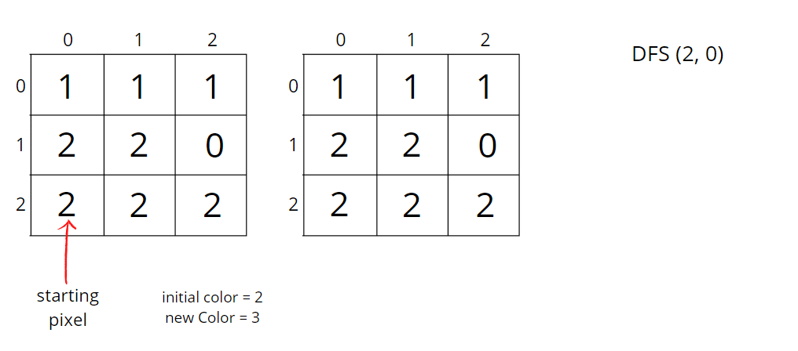

Problem Statement: An image is represented by a 2-D array of integers, each integer representing the pixel value of the image. Given a coordinate (sr, sc) representing the starting pixel (row and column) of the flood fill, and a pixel value newColor, "flood fill" the image.
To perform a "flood fill", consider the starting pixel, plus any pixels connected 4-directionally to the starting pixel of the same colour as the starting pixel, plus any pixels connected 4-directionally to those pixels (also with the same colour as the starting pixel), and so on. Replace the colour of all of the aforementioned pixels with the newColor.
Pre-req: Connected Components, Graph traversal techniques
Example 1:
Input:  sr = 1, sc = 1, newColor = 2 Output:
Explanation:

From the centre of the image (with position (sr, sc) = (1, 1)), all pixels connected by a path of the same colour as the starting pixel are colored with the new colour. Note the bottom corner is not colored 2, because it is not 4-directionally connected to the starting pixel.
Example 2:
Input:  sr = 2, sc = 0, newColor = 3 Output: 
Solution
Disclaimer: Don't jump directly to the solution, try it out yourself first.
Approach:
To perform a "flood fill", consider the starting pixel, plus any pixels connected 4-directionally to the starting pixel of the same colour as the starting pixel, plus any pixels connected 4-directionally to those pixels (also with the same colour as the starting pixel), and so on.

We know about both the traversals, Breadth First Search (BFS) and Depth First Search (DFS). We can follow BFS also, where we start at a given point and colour level wise, i.e., we go simultaneously to all its neighbours. We can use any of the traversals to solve this problem, in our case we will be using DFS just to explore multiple approaches.
The algorithm steps are as follows:
- Initial DFS call will start with the starting pixel (sr, sc) and make sure to store the initial colour.
- Now, either we can use the same matrix to replace the colour of all of the aforementioned pixels with the newColor or create a replica of the given matrix. It is advised to use another matrix because we work on the data and not tamper with it. So we will create a copy of the input matrix.
- Check for the neighbours of the respective pixel that has the same initial colour and has not been visited or coloured. DFS call goes first in the depth on either of the neighbours.
- We go to all 4 directions and check for unvisited neighbours with the same initial colour. To travel 4 directions we will use nested loops, you can find the implementation details in the code.
- DFS function call will make sure that it starts the DFS call from that unvisited neighbour, and colours all the pixels that have the same initial colour, and at the same time it will also mark them as visited.
In this way, “flood fill” will be performed. It doesn’t matter how we are colouring the pixels, we just want to colour all of the aforementioned pixels with the newColor. So, we can use any of the traversal techniques.
Consider the following example to understand how DFS traverses the pixels and colours them accordingly.

How to set boundaries for 4 directions?
The 4 neighbours will have following indexes:
Now, either we can apply 4 conditions or follow the following method.
From the above image, it is clear that delta change in row is -1, +0, +1, +0. Similarly, the delta change in column is 0, +1, +0, -1. So we can apply the same logic to find the neighbours of a particular pixel (<row, column>).
Code:
#include<bits/stdc++.h>
using namespace std;
class Solution {
private:
void dfs(int row, int col, vector<vector<int>>&ans,
vector<vector<int>>& image, int newColor, int delRow[], int delCol[],
int iniColor) {
// color with new color
ans[row][col] = newColor;
int n = image.size();
int m = image[0].size();
// there are exactly 4 neighbours
for(int i = 0;i<4;i++) {
int nrow = row + delRow[i];
int ncol = col + delCol[i];
// check for valid coordinate
// then check for same initial color and unvisited pixel
if(nrow>=0 && nrow<n && ncol>=0 && ncol < m &&
image[nrow][ncol] == iniColor && ans[nrow][ncol] != newColor) {
dfs(nrow, ncol, ans, image, newColor, delRow, delCol, iniColor);
}
}
}
public:
vector<vector<int>> floodFill(vector<vector<int>>& image,
int sr, int sc, int newColor) {
// get initial color
int iniColor = image[sr][sc];
vector<vector<int>> ans = image;
// delta row and delta column for neighbours
int delRow[] = {-1, 0, +1, 0};
int delCol[] = {0, +1, 0, -1};
dfs(sr, sc, ans, image, newColor, delRow, delCol, iniColor);
return ans;
}
};
int main(){
vector<vector<int>>image{
{1,1,1},
{1,1,0},
{1,0,1}
};
// sr = 1, sc = 1, newColor = 2
Solution obj;
vector<vector<int>> ans = obj.floodFill(image, 1, 1, 2);
for(auto i: ans){
for(auto j: i)
cout << j << " ";
cout << "\n";
}
return 0;
}
Output:
2 2 2 2 2 0 2 0 1
Time Complexity: O(NxM + NxMx4) ~ O(N x M)
For the worst case, all of the pixels will have the same colour, so DFS function will be called for (N x M) nodes and for every node we are traversing for 4 neighbours, so it will take O(N x M x 4) time.
Space Complexity: O(N x M) + O(N x M)
O(N x M) for copied input array and recursive stack space takes up N x M locations at max.
import java.util.*;
class Solution
{
private void dfs(int row, int col,
int[][] ans,
int[][] image,
int newColor, int delRow[], int delCol[],
int iniColor) {
// color with new color
ans[row][col] = newColor;
int n = image.length;
int m = image[0].length;
// there are exactly 4 neighbours
for(int i = 0;i<4;i++) {
int nrow = row + delRow[i];
int ncol = col + delCol[i];
// check for valid coordinate
// then check for same initial color and unvisited pixel
if(nrow>=0 && nrow<n && ncol>=0 && ncol < m &&
image[nrow][ncol] == iniColor && ans[nrow][ncol] != newColor) {
dfs(nrow, ncol, ans, image, newColor, delRow, delCol, iniColor);
}
}
}
public int[][] floodFill(int[][] image, int sr, int sc, int newColor)
{
// get initial color
int iniColor = image[sr][sc];
int[][] ans = image;
// delta row and delta column for neighbours
int delRow[] = {-1, 0, +1, 0};
int delCol[] = {0, +1, 0, -1};
dfs(sr, sc, ans, image, newColor, delRow, delCol, iniColor);
return ans;
}
public static void main(String[] args)
{
int[][] image = {
{1,1,1},
{1,1,0},
{1,0,1}
};
// sr = 1, sc = 1, newColor = 2
Solution obj = new Solution();
int[][] ans = obj.floodFill(image, 1, 1, 2);
for(int i = 0; i < ans.length; i++){
for(int j = 0; j < ans[i].length; j++)
System.out.print(ans[i][j] + " ");
System.out.println();
}
}
}
Output:
2 2 2 2 2 0 2 0 1
Time Complexity: O(NxM + NxMx4) ~ O(N x M)
For the worst case, all of the pixels will have the same colour, so DFS function will be called for (N x M) nodes and for every node we are traversing for 4 neighbours, so it will take O(N x M x 4) time.
Space Complexity: O(N x M) + O(N x M)
O(N x M) for copied input array and recursive stack space takes up N x M locations at max.
Special thanks to Vanshika Singh Gour for contributing to this article on takeUforward. If you also wish to share your knowledge with the takeUforward fam, please check out this article. If you want to suggest any improvement/correction in this article please mail us at write4tuf@gmail.com